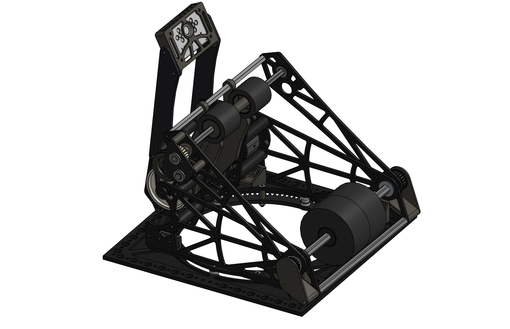
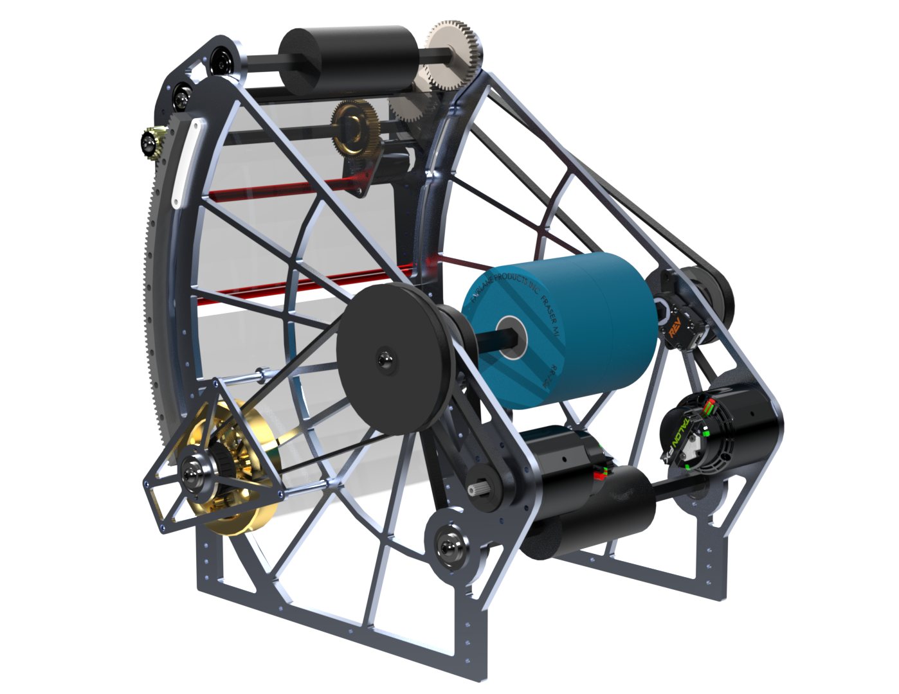
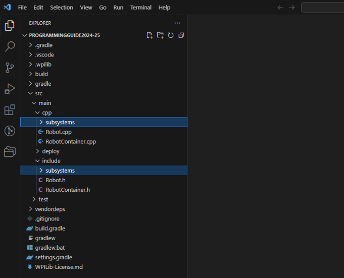
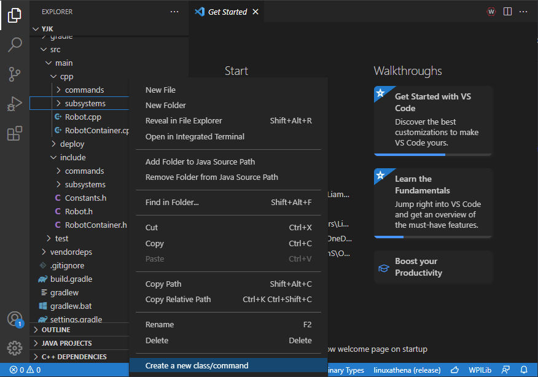
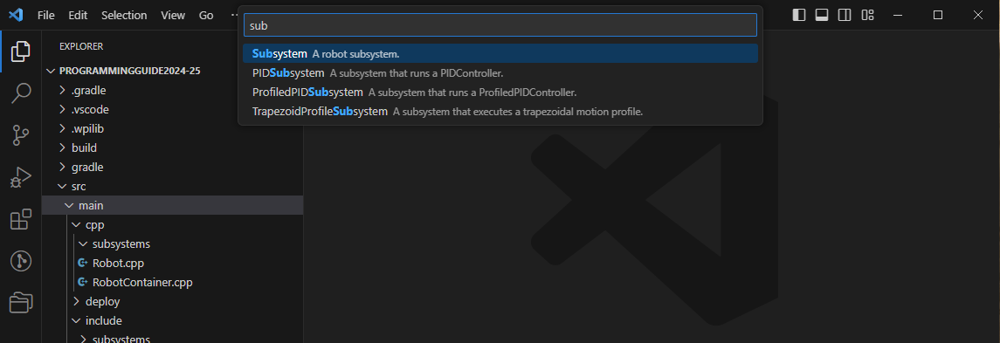
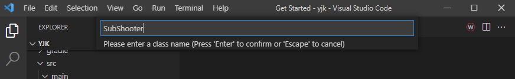

What is a subsystem? Header & body files
You'll have created an empty SubShooter subsystem and understand the split between its header and body files.
Our goal for this whole module is to run a ball shooter: a large wheel (a flywheel) that spins up fast, so that a ball pushed into it gets fired toward a goal. Shooting is one of the most common problems in FRC.


The shooter is a subsystem, which is a part of the robot with its own actuators, sensors and structural components. We organise our code into subsystems, so let's make one for the shooter.
Make folders for subsystems
In VS Code's file explorer (left side):
- Right-click the cpp folder under src/main → New Folder… → name it subsystems.
- Do the same under src/main/include — another subsystems folder.

Create the subsystem
Right-click src/main/cpp/subsystems → Create a new class/command → choose Subsystem. Name it SubShooter.



We always start subsystem names with Sub (SubShooter, SubFeeder, SubTurret…). It makes them easy to tell apart from Commands, which you'll meet soon.
Two files, one subsystem
VS Code created two files. They are two halves of the same subsystem:
- SubShooter.h — the header. Here we declare what the subsystem has and can do.
- SubShooter.cpp — the body. Here we define how it does those things.
With your cursor in one file, press Alt + O to jump to its partner. Press it again to swap back — you'll use this constantly.
Here's the empty header VS Code generated for you:
#pragma once
#include <frc2/command/SubsystemBase.h>
class SubShooter : public frc2::SubsystemBase {
public:
SubShooter();
// Will be called periodically whenever the CommandScheduler runs.
void Periodic() override;
private:
// Components (e.g. motor controllers and sensors) should generally be
// declared private and exposed only through public methods.
};
By the end of the module our shooter will:
- Have one motor (a Spark Flex motor controller), and
- Can start spinning, and
- Can stop spinning.